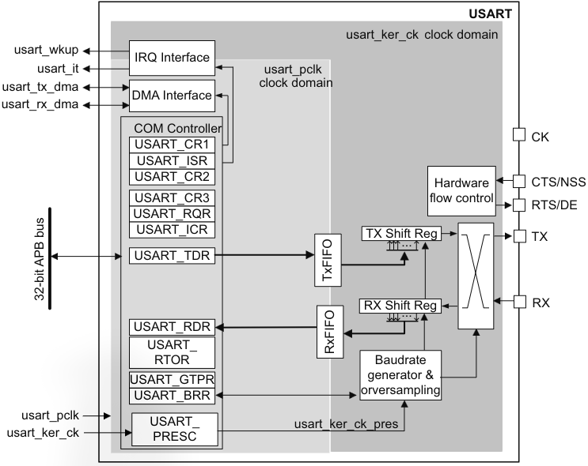

Contents
STM32 UART (Universal Asynchronous Receiver-Transmitter)
I began learning UART after a 2-day debugging nightmare on a small OLED screen. I wanted to learn I2C communication by printing text to it, but not matter what, it remained blank.
Eventually I solved it, but I could've saved 2 days if I knew how to just print debug statements from my STM32 to my computer.
UART itself is easy enough to learn, the implementation on an STM32 is what troubled me with its countless options and ways of implementing them.
What Is UART?
UART stands for Universal Asynchronous Receiver-Transmitter. It's a universal way of receiving and transmitting serial data, serial meaning it's sent one bit at a time instead of at once.
In short, 2 connected devices send and receive packets between each other through their own ‘transmit' and ‘receive' lines, and they do it at a pre-agreed speed.
The packet itself is structured so the receiver knows when it starts, how much data there is, a bit to check if the data is corrupted, and another 1 or 2 to know that the packet is finished.
2 devices are connected with 2 physical lines (device A's transmit connects to device B's receive, and device B's transmit connects to device A's receive). These lines are used to send/receive packets at a pre-agreed speed (called baud rate).
Packets are structured, generally like this:
- 1 bit indicates the start of a packet
- 5-9 bits (configurable) hold the data
- 1 bit (optional) indicates if the data is corrupted via bit parity
- 1, 1.5, or 2 bits (configurable) signal the end of a packet
Parity
This is an optional bit that the receiver can use to detect if the data it received has been corrupted in transit (e.g. if the line is noisy or there's interference).
There are 2 options:
- odd parity
- even parity
In either case, the amount of 1's in the data are counted and the parity bit is set based off that:
- In odd parity, if the number of 1's is even, the parity bit is 1
- If the number of 1's is odd, the parity bit is 0
- Vice-versa for even parity
This isn't a perfect way of detecting errors - if 2 data bits are corrupted instead of 1, it will not be detected, but it's good enough for basic UART.
It's also not an error correction mechanism, it can only detect them.
Stop Bits
Hold on - 1.5 stop bits???
Yup, that's one of the first things which confused me. On certain hardware or when the 2 devices have slightly different clock speeds due to hardware limitations, the stop bit may need to be longer than 1 so the receiver can properly sync and process the byte. However, 2 stop bits reduce throughput (how much useful data is transferred for the same amount of time), so 1.5 stop bits is like a decent 'compromise'.
Althought, from further research, it seems like this should only be used for smartcard mode (which isn't the standard UART protocol) so I won't mention it anymore.
Oversampling
When the receiver receives a packet, it doesn't just magically detect the bits - it has to 'sample' its 'receive' line for each bit and determine what it is.
There is, however, an issue with the basic method of "just sample every X clock cycles that correspond to the baud rate". Imagine you're developing something that will exit in an electrically noisy environment - on the precise clock cycle at which the receiver samples the 'receive' line to read the bit, the line gets corrupted and 0 changes to 1, or 1 to 0 for a few clock cycles before going back to the correct value.
With the basic method, the bit will be sampled incorrectly, which can be inacceptable based off how important the data is.
So, the solution is oversampling.
The receiver 'divides' each bit into 8 or 16 equal intervals using the baud rate. For example, if the baud rate is 9600 (bits/second) then each bit lasts for 104.17μs. That means (for 16x oversampling) each interval is 6.51μs (from 104.17/16), and so the receiver samples at that interval.
In short, it samples each bit 8 or 16 times based off the configuration.
However, not all samples are created equal.
The line signal doesn't immediately change once the sender flips a bit from 0 to 1 (or 1 to 0), so only samples around the middle are considered by the receiver for the final bit - more specifically only 3 samples around the middle of the bit period.
The 3 samples are then voted on - the majority vote wins - and that drastically lowers the odds of line interference or jittery data being an issue (but it's not a foolproof solution, which is why other methods and protocols exist if reliability is a must).
UART On STM32
As one of the most popular protocols in the embedded world, UART is obviously supported on STM32 development boards, such as the Nucleo-STM32's (I'm using the Nucleo-STM32H7RS which is what this article is written based on).
STM32 chips support up to 3* distinct types of UART peripherals for your various use cases:
- UART if you want the standard UART experience
- USART if you want synchronous and smartcard functionality on top of basic UART
- LPUART if you want low-power usage with limited functionality
In any case, all support the basic idea of what UART is, and they support FIFO buffers, so you can have non-blocking data transfers.
Block Diagram
This is how UART is laid out on the STM32H7RS, though a lot of this is so fundamental it'll be similar/identical on other chips.
The image is below, and it tells us a lot of things already:
- you'll find the configuration registers on the APB bus
- there's an interrupt and DMA interface for non-blocking software design
- the image is nicely divided into which parts are controlled by the bus interface clock and which by the kernel clock (if you're not sure what this is, read up on the RCC article)
- the TxFIFO/RxFIFO are connected to the shift registers, which are clocked by the baudrate generator (baudrate generated by kernel clock)
- all of that leads to the
TX/RXpins you use to talk over UART
The TX pin isn't always 'there', if you aren't configuring UART with the transmitter enabled, this becomes a normal GPIO pin. If configured, the pin idles at high when no data is being transmitted. There are also 2 interesting UART modes called single-wire and smartcard. I won't talk about the latter in this article, but single-wire lets you transmit and receive over a single wire, and this is the pin used in those modes.
The only other thing worth mentioning in terms of pure UART is the pin labelled with NSS - that is for UART in synchronous master-slave mode, and it's used as input for slave selection.
The other pins are not so relevant as they're for other protocols that use the UART block as their base. They need separate articles.

* Not all chips include these 3. The STM32H7RS, for example, does - but typically you'd only have the first 2. LPUART is only really on chips with low-power use cases in mind, and the H7RS as that one just has everything. Writing this sentence led me to learning that ARM doesn't actually manufacture the ARM Cortex-M core, they just provide the license for manufacturing. Companies like STMicroelectronics take it and make their own version by expanding its functionality and having it manufactured. Not very useful info but at least you're prepared for semiconductor trivia night!
UART Characters
On the STM32, you can specify how long you want the data field of the UART package to be. You can typically choose between 7, 8, or 9 bits, which is selected in the USART_CR1 control register.
By default, Tx/Rx are both low during the start bit and high during the stop bit(s).
If a period the length of a full UART package is all 1's, that's interpreted as an idle character*. If a period the length of a full UART package is all 0's, that's interpreted as an break character. From my research, it seems like these are user-defined, as in they can be detected and you can choose what to do on each of them.
* Although they're called 'characters', they aren't the typical 8-bit ASCII character you might be thinking of. They're just a period of time equivalent to a full UART packet where the signal is all 0s or all 1s.
FIFO And Thresholds
By default, UART is configured to use the USART_RDR and USART_TDR registers for receiving/transmitting data 1-byte at a time.
This naturally comes with issues, such as:
- the CPU has to handle every read/write directly, so it wastes CPU cycles that could've been used doing something more productive
- you can only read 1 transferred data packet at a time, with each new one overriding the old one, which leads to data loss if you aren't fast enough in servicing it
With FIFO mode (FIFO standing for "First In, First Out"), you can have the chip automatically sending/storing packets until it hits a threshold, in which case you are made aware through an interrupt. And you usually do use FIFO mode with interrupts (unless you have a specific reason not to, such as specific timing requirements).
The reason it's called FIFO is because it works like a queue: the first packet you receive from UART is the first one serviced when you read the data buffer, and the first packet you put in the buffer is the first one that gets sent i.e. it keeps the data in the same chronological order.
FIFO mode is entered through the setting of the FIFOEN bit in the USART_CR1 control register, and you can only use this mode in UART, SPI, and smartcard modes (only discussing UART in this article).
And since the data you can send/receive is able to be up to 9-bits wide, so the TxFIFO is 9-bits wide.
However, the RxFIFO is 12-bits wide as it needs to store 'metadata' flags:
- parity error
- noise error
- framing error
Despite this, when you read USART_RDR, you only read the 9-bits of data without the flags, which can be read from USART_ISR.
FIFO Threshold Interrupts
As for the threshold levels, it's possible to configure both the Tx and Rx levels at which the interrupts are triggered using the USART_CR3 control register, looking for the RXFTCFG and TXFTCFG bits.
In the Rx buffer, the threshold is reached when the USART_RDR register and the RxFIFO hit a combined total of the threshold. Since USART_RDR has a capacity of 1, the threshold is hit when the RxFIFO is at threshold - 1 amount of data stored.
Additionally, the Rx flags are only set one time once the threshold is reached, NOT for every individual transfer.
In the Tx buffer, the threshold is reached when the number of 'empty' data locations is greater than the threshold value.
UART Transmitter/Receiver
You don't always want to send data over UART, sometimes you want to only read.
That's why you need to enable the transmitter first if you want to send data, which is done through the TE bit located in the all-so-versatile USART_CR1 control register.
In the same way, you don't always want to send data, and USART_CR1 also has a RE bit to enable/disable the receiver.
Transmitter TE
Disabling the transmitter through the TE bit during the sending of data is going to corrupt the data permanently (as in, even re-enabling it later won't recover the interrupted transfer).
When enabled, the TE sends an idle frame.
Transmitter Default Vs FIFO
The way data is sent is always the same:
- LSB sent first
- data is shifted and sent via the shift register
When sending data without FIFO mode, the USART_TDR register is the only buffer between the internal bus and the shift register, which means the send needs to happen and finish before filling the register up again, otherwise you will lose data.
When sending data with FIFO mode, the data you put in the USART_TDR register gets queued in the TxFIFO.
Upon sending this data, it preceeded by a single start bit that corresponds to a logical '0' (as per the UART protocol), and by a configurable number of stop bits (again, as per the UART protocol).
The RM0477 reference manual (and possibly reference manuals for your board) has an outlined sequence of how to bring up the transmission part of UART and send data.
Transmitter Flags
There are a few flags you get access to, summarised from the RM0477:
| Flag | Meaning | How To Clear | How To Enable |
|---|---|---|---|
| TXE | Transmit data register empty | Write to TDR* | TXEIE |
| TXFNF | Transmit FIFO not full | Fill TxFIFO | TXFNFIE |
| TXFE | Transmit FIFO empty | Write to TDR or write 1 to TXFRQ | TXFEIE |
| TXFT | Transmit FIFO threshold reached | Write to TDR** | TXFTIE |
| CTSIF | Clear-To-Send interrupt*** | Write 1 to CTSCF | CTSIE |
| TC | Transmission complete | Write to TDR or write 1 in TCCF | TCIE |
| TCBGT | Only for smartcard mode | n/a | n/a |
* In FIFO mode, TxFIFO needs to be full as well. Not a confirmed reason that I found or anything, but I believe this is because the USART_TDR contents get moved to the TxFIFO buffer in FIFO mode unless the TxFIFO is full, and this flag only checks if the USART_TDR register has contents inside it, not the TxFIFO.
** Writing to TDR will only cause the flag to be cleared if the empty spots in the TxFIFO are less than the threshold. It remains set otherwise.
*** See RTS/CTS section.
STM32 UART Registers
Sources
CircuitBasics - Basics of UART Communication StackExchange - UART oversampling STMicroelectronics - STM32H7RS Reference Manual StackExchange - How does the UART communication detect the true idle in this case? Wikipedia - UART Microchip - Guard Time